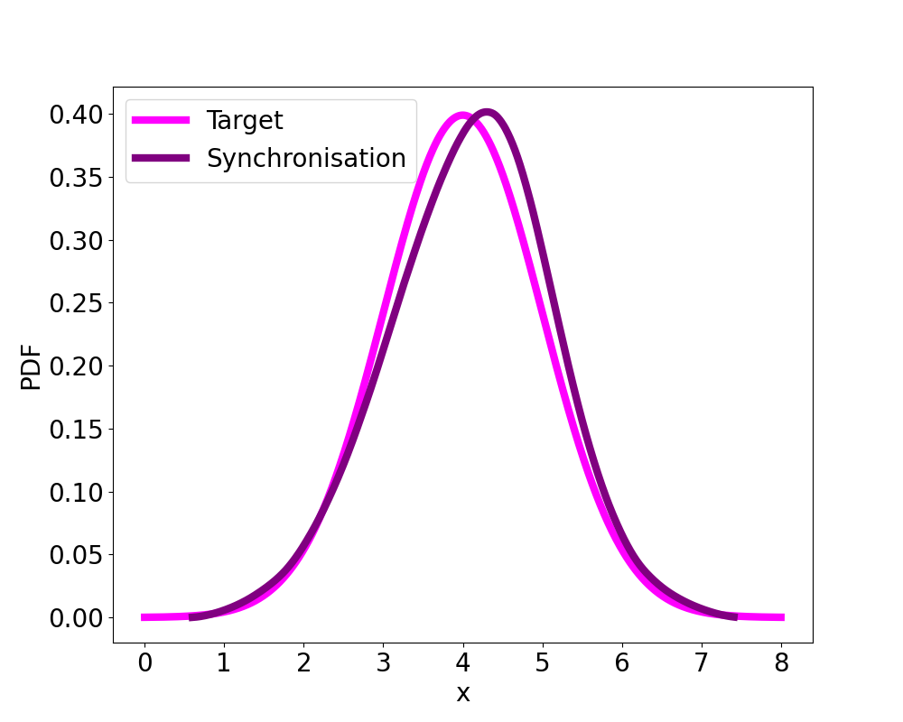

在生物医学研究中，死亡年龄的密度和风险函数以及基因表达的密度函数通常是主要关注点。在这种情况下，人们观察到许多密度函数，这些密度被视为函数型数据，即作为潜在随机过程的样本实现。简单讲，我们有 \(f_{1},\ldots,f_{n}\)，其中 \(f_{k},k=1,\ldots,n\) 是从未知分布 \(\mathcal{F}\) 中抽取的样本。我们的目标是估计这个分布 \(\mathcal{F}\)。但是实际中，我们并不直接观察到 \(f_{k}\)，而是观察到 \(m\) 个从 \(f_{k}\) 中抽取的样本 \(x_{k1},\ldots,x_{km}\)。今天我们就来讨论如何估计这个分布 \(\mathcal{F}\)， 或者它的密度函数 \(f\)。文献中有很多方法，今天我们主要复现 [@zhangFunctionalDensitySynchronization2011] 中分位数同步的方法。首先，我们生成数据，然后估计每个密度函数，最后进行同步（Synchronisation）。
例如，我们采用了 [@zhangFunctionalDensitySynchronization2011] 中的模拟研究 (1)。目标分布是均值为4、标准差为1的高斯密度的分位数函数 \(Q_{0}\)。扰动函数为 \(\delta(t) = A \sin(\pi t)\)，其中振幅服从均匀分布 \(A ∼ \text{Uniform}(−1, 1)\)，令分位数函数\(Q_{k}\)为 \[ \begin{equation*} Q_k(t)=Q_0(t)+\delta_k(t),\quad k=1,\ldots,60, \end{equation*} \] 然后从每个分布 \(F_{k} = Q_{k}^{-1}\) 中随机抽取 \(m = 1000\) 个观测值。
以下Python代码可以生成数据。
import matplotlib.pyplot as plt
import numpy as np
from scipy.stats import gaussian_kde, norm, uniform
# Define the quantile functions for the densities
def quantile_function_0(p):
return norm.ppf(p, loc=4, scale=1)
def quantile_function_k(p, amplitute):
return quantile_function_0(p) + amplitute * np.sin(np.pi * p)
def draw_samples_from_quantile(n_samples, quantile_func, amplitute):
# Generate uniform random samples
uniform_samples = np.random.uniform(0, 1, n_samples)
# Apply the quantile function to transform the uniform samples
samples = quantile_func(uniform_samples, amplitute)
return samples, uniform_samples
# the number of densities
k = 60
# uniform(-1,1)
amp = uniform.rvs(size=k, loc=-1, scale=2)
np.random.seed(2024)
m = 100
y = np.zeros((k, m))
t = np.zeros((k, m))
for i in range(k):
y[i, :], t[i, :] = draw_samples_from_quantile(m, quantile_function_k, amp[i])下面我们绘制前10个分位数函数的观测值，如图 1 所示。
注意：这些观测值是从具有不同振幅的分位数函数生成的。接下来，我们将研究个体密度函数估计。
对第\(k\)个样本 \(x_{k1},\ldots,x_{km}\),
有非常多的方法可以来估计其密度函数，为了简单起见，我们直接使用
scipy 中的高斯核密度估计器
gaussian_kde。以下是代码：
x = np.linspace(0, 8, 100)
kde_all = 0
fig, ax = plt.subplots(figsize=(10, 8))
for y_i in y:
print(len(y_i))
kde = gaussian_kde(y_i)
kde_est = kde(x)
ax.plot(x, kde_est, linestyle=":", color="grey", linewidth=2)
kde_all += kde_est
# add the target density, i.e., N(4,1)
ax.plot(x, kde_all / k, color="purple", linewidth=6, label="CS Mehtod")
ax.plot(
x, norm.pdf(x, loc=4, scale=1), color="magenta", linewidth=6, label="Target density"
)
ax.set_xlabel("x", fontsize=20) # Increase font size
ax.set_ylabel("Density", fontsize=20)
ax.tick_params(axis="both", which="major", labelsize=20)
ax.legend(fontsize=20)得到每个个体密度函数估计后，一个很自然的想法是将这些密度函数取平均，得到一个平均密度函数。这个平均密度函数可以看作是对分布 \(\mathcal{F}\) 的估计。也就是说： \[ \begin{equation*} \hat{f}(x) = \frac{1}{n}\sum_{k=1}^{n}\hat{f}_{k}(x), \end{equation*} \] 其中 \(\hat{f}_{k}(x)\) 是第 \(k\) 个个体密度函数的估计，\(\hat{f}(x)\) 也称为横截面估计 （cross-section estimator）。下图展示了每个个体密度函数估计和平均密度函数估计。
图2 中，灰色虚线表示每个个体密度函数估计，紫色实线表示平均密度函数估计， 品红色（magenta） 实线表示目标密度函数是。可以看出，平均密度函数估计（紫色实线）与目标密度函数（品红色实线）不是非常接近。这里有两个问题我们需要考虑：
下面我们介绍分位数同步方法来解决这两个问题。
算法分为以下几步：
R 包
lo\kern 进行估计的。
那估计 \(\widehat{F}_{0}(t)\) 可以看作是对分布 \(\mathcal{F}\) 的估计。下面是估计结果：
最终，我们可以用 \[ \begin{equation*} \hat{f}_\oplus(x)=\int_0^T\hat{F}_0(v)\beta_h^{(1)}\left(x-v\right)\mathrm{d}v. \end{equation*} \] 来估计密度函数。其中 \(\beta_h^{(1)}=\frac{1}{h^{2}}\beta^{(1)}(\frac{\cdot}{h})\), \(\beta^{(1)}\) 是高斯核函数的一阶导数。其实就是 \(\beta_h^{(1)}\) 对 \(\widehat{F}_{0}(t)\) 的卷积，
Python 代码如下：
# test den_quant_synch function
# Define kernel function (e.g., Gaussian)
def phi(x, theta):
return norm.pdf(x, loc=0, scale=theta)
# Define derivative kernel
def dphi(x, theta):
return -x / theta**2 * norm.pdf(x, loc=0, scale=theta)
n = 800
x_test = np.linspace(0, 8, n)
p_cdf = np.zeros(n)
for i, x_test_i in enumerate(x_test):
p_cdf[i] = cdf_synch(x_test_i, y, bd_all)
print(i)
plt.plot(x_test, p_cdf)
# %%
theta = 2.64
dF0_dtheta = np.convolve(
p_cdf, dphi(x=np.linspace(-2.5, 2.5, 120), theta=theta), mode="valid"
)
# integral = np.trapz(dF0_dtheta, dx=0.01) # assume dx=0.1, adjust as needed
# dF0_dtheta_normalized = dF0_dtheta / integral
# plt.plot(np.linspace(-1, 1, n), dphi(x=np.linspace(-1,1, n), theta=0.1))
fig, ax = plt.subplots(figsize=(10, 8))
ax.plot(
x_test,
norm.pdf(x_test, loc=4, scale=1),
color="magenta",
linewidth=6,
label="Target",
)
plt.plot(
x_test[60:741], dF0_dtheta, color="purple", linewidth=6, label="Synchronisation"
)
ax.set_xlabel("x", fontsize=20) # Increase font size
ax.set_ylabel("PDF", fontsize=20)
ax.tick_params(axis="both", which="major", labelsize=20)
ax.legend(fontsize=20)
# plt.plot(y[:10, :].T)
plt.savefig("../Markdown/sync_pdf_est.png")下图展示了密度函数估计结果。  更多算法，请扫描下方二维码，查看完整代码。